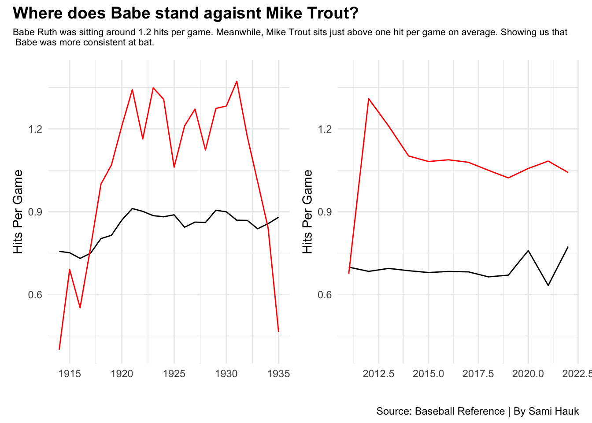

Would Babe Ruth be as significant if he were a player in the MLB today?
babe ruth
mlb
baseball
Author
Sami Hauk
Published
April 16, 2023
Babe Ruth was a professional American baseball player in the MLB from 1914-1935. Ruth is better known as the greatest baseball player of all time. Babe Ruth was been an incredible player in his time, although where would he stand if he was playing in the today’s league? While the averages might look similar to Babe Ruth’s era, there are a lot of factors that must take into account before judging where he stands. Strength and power could be a huge factor, but that is all relevant to the technology to date. The on base percentages and slugging are a lot more beneficial to compare. By looking at the statistics in the MLB in today’s world and Babe Ruth’s era, the numbers should align that he would not be as significant of a player. He would be another solid MLB hitter.
Code
library(tidyverse)library(ggalt)library(ggtext)library(ggrepel)library(ggbeeswarm)library(patchwork)set.seed(1234)pitching <-read_csv("pitchingavgs.csv") hitters <-read_csv("baseballhitters19142022.csv")br <-read_csv("baberuth.csv")careerops <- hitters %>%group_by(Name) %>%mutate(CumOPS =cumsum(`OPS+`)) %>%ungroup() %>%mutate(Name ==str_trim(Name))bigtime <- careerops %>%group_by(Name) %>%filter(CumOPS ==max(CumOPS)) %>%ungroup() %>%filter(CumOPS >3750)brcumops <- careerops %>%filter(Name =="Babe Ruth")ggplot() +geom_step(data=careerops, aes(x=Season, y=CumOPS, group=Name), color="grey") +geom_point(data=bigtime, aes(x=Season, y=CumOPS, group=Name, color=Name)) +geom_step(data=brcumops, aes(x=Season, y=CumOPS, group=Name), color="red")+labs(title="Does Babe Ruth have a cumulative OPS that is better from the players in his time?",subtitle ="Babe Ruth' cumulative OPS was well above average. With nine seasons above .700, Ruth was outstanding when it comes to his on base percentage and slugging.",caption ="Source: Baseball Reference | By Sami Hauk",x ="",y ="Cumulative OPS",) +theme_minimal() +theme(plot.subtitle =element_textbox_simple(),plot.title.position ="plot",plot.title =element_text(size =12, face ="bold") )
Babe Ruth had his all time high of a 255 OPS+ in 1920, while playing for the New York Yankees as a slugging outfielder. That year was his best year in the league. With an OPS of 1.379, slugging at .847, and an OBP of .532: he was an unstoppable player.
Code
bigtimecareer <- careerops %>%filter(Name %in% bigtime$Name)hr <-ggplot() +geom_beeswarm(data=bigtimecareer, groupOnX=TRUE, aes(x=HR, y=Name), color="red") +labs(x="Home Runs",y="" ) +theme_minimal()so <-ggplot() +geom_beeswarm(data=bigtimecareer, groupOnX=TRUE, aes(x=SO, y=Name), color="light blue") +labs(x="Home Runs",y="" ) +theme_minimal()(hr + so) +plot_annotation(title="Where does Babe Ruth statisitcally stand in strike outs and home runs?",subtitle ="Babe Ruth was an outlier in both. While he was a lower contestant on number of strikeouts, he was ahead on his number of home runs\n in comparison to the other players.",caption ="Source: Baseball Reference | By Sami Hauk",theme =theme(plot.title =element_text(size =14, face ="bold")) &theme(plot.subtitle =element_text(size=8)))
In his time, there was no players close to the ability of Ruth.
Striking out is something so significant in a players game. Babe Ruth was as fearless as it gets when it came down to it. In 1923, he struck out more than any other player in the Major League Baseball. Strikeouts only will show us so much. While his numbers are not what you might expect, the home runs hit by Ruth was significantly higher than all other big time players.
Code
bryears <- hitters %>%filter(Season >=1914& Season <=1935) %>%group_by(Season) %>%summarize(Games =sum(G),Hits =sum(H) ) %>%mutate(HPG = Hits/Games ) brhpg <- br %>%mutate(HPG = H/G)line1 <-ggplot() +geom_line(data=bryears, aes(x=Season, y=HPG), color="black") +geom_line(data=brhpg, aes(x=Year, y=HPG), color="red") +scale_y_continuous(limits =c(.4, 1.4)) +labs(x="",y="Hits Per Game" ) +theme_minimal()mtyears <- hitters %>%filter(Season >=2011& Season <=2022) %>%group_by(Season) %>%summarize(Games =sum(G),Hits =sum(H) ) %>%mutate(HPG = Hits/Games )mthpg <- hitters %>%filter(Name =="Mike Trout") %>%mutate(HPG = H/G)line2 <-ggplot() +geom_line(data=mtyears, aes(x=Season, y=HPG), color="black") +geom_line(data=mthpg, aes(x=Season, y=HPG), color="red")+scale_y_continuous(limits =c(.4, 1.4)) +labs(x="",y="Hits Per Game" ) +theme_minimal()(line1 + line2) +plot_annotation(title="Where does Babe stand agaisnt Mike Trout?",subtitle ="Babe Ruth was sitting around 1.2 hits per game. Meanwhile, Mike Trout sits just above one hit per game on average. Showing us that\n Babe was more consistent at bat.",caption ="Source: Baseball Reference | By Sami Hauk",theme =theme(plot.title =element_text(size =14, face ="bold")) &theme(plot.subtitle =element_text(size=8)))

Babe Ruth and Mike Trout are easily top MLB players to date. By looking at each season and hits per game both players had, were able to see how Babe Ruth was a significantly better batter in his time.
Code
scatter1 <-ggplot() +geom_point(data=bigtimecareer, aes(x=AB, y=OBP), color ="blue") +scale_x_continuous(limits =c(0.0, 600)) +scale_y_continuous(limits =c(0.0, 0.6)) +labs(x="On Base Percentage",y="At Bats" ) +theme_minimal()scatter2 <-ggplot() +geom_point(data=br, aes(x=AB, y=OBP), color ="pink") +scale_x_continuous(limits =c(0.0, 600)) +scale_y_continuous(limits =c(0.0, 0.6)) +labs(x="On Base Percentage",y="At Bats" ) +theme_minimal()(scatter1 + scatter2) +plot_annotation(title="Was there a difference in At Bats and On Base Percentage vs Babe Ruth?",subtitle ="Babe Ruth held a stronger On Base Percentage against the highest players in his time. He also was able to achieve more at bats\n throughout his career since he was able to consistently get on base.",caption ="Source: Baseball Reference | By Sami Hauk",theme =theme(plot.title =element_text(size =13, face ="bold")) &theme(plot.subtitle =element_text(size=8)))
Babe Ruth was an incredible Major League Baseball player. Many players have come close to his stats, but at the rate of technology and statistics, it is nearly impossible to achieve what Babe Ruth did.